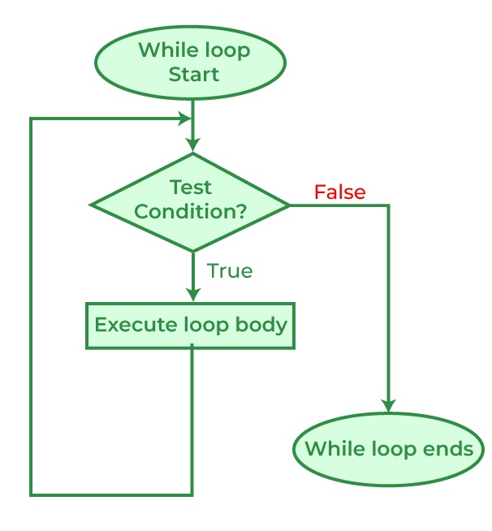
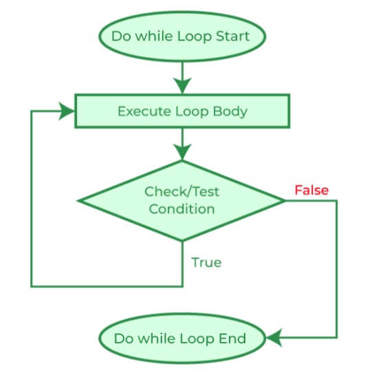

While-Statements#
Just like the for loop, the while loop deals with iteration (repetition or loops).
The while loop is condition-controlled, as opposing to for loop , which is
count-controlled. This means a while loop runs a set of instructions continuously
as long as the given boolean condition evaluates true, no matter how many loops it takes.
Only when the condition is evaluated to NOT true, then the loop terminates.
The flowchart of a while loop looks like the graph below, note that the sequential flow of a program is altered with the loops, just like with method calls and conditional statements: [1]
{kind=link}

For while loop, it is common to initialize a variable to be used in the
condition, therefore the syntax would look like:
initialization
while ( *condition* )
{
// statement(s)
// iterator expression
}
Note that, because the condition (boolean expression) is evaluated before each execution of the loop body (#4-6), a while loop can executes zero (if the condition evaluates to false immediately) or more times.
You should test the following code, less the comments, in csharprepl to get familiar with
the C# while loop:
int n = 0; // initialization
while (n < 5) // conditional expression in the while loop header { Console.Write(n); // body of while loop n++; // iterator (iterator expression)/update }
// output: 01234
Note that this while loop code above is just the same as a for loop:
for (int i = 0; i < 5; i++) { Console.Write(i); }
// output: 01234
Both code have initializer, conditional expression, and iterator expression
( see For Statement Syntax); except that in for loop, the three sections are
placed together in the header, while they are placed in different locations in
the while loop.
**Stepping**
Test yourself: Follow the code below to figure out what is printed:
int i = 4;
while (i < 9)
{
Console.WriteLine(i);
i = i + 2;
}
Compare the preceding code to the code loop below:
int i = 4; while (i < 9)
{
i = i + 2;
Console.WriteLine(i);
}
Do they produce the same result? Now, compare the preceding code with the following:
> for (int i = 4; i < 9; i += 2)
{
Console.WriteLine(i);
}
Make sure you are able to interpret the code correctly and type them in csharprepl or
VS Code to test them out.
Infinite loops#
Just like The for Statement, manipulating the header sections will
change the behavior of the loop. Test the following code in your csharprepl and be ready
to issue Control + C to terminate the process:
> int n = 0;
> while (n < 5)
{
Console.Write(n);
}
000000000000000000000000000000...
Observing the code, you see that the variable n is not being updated in the body
of the while loop. Since n is not updated, the value stays as 0, and the boolean
condition (n < 5>) is always evaluated to be true, an infinite loop is therefore
formed since (n < 5) will stay true and, while the boolean condition is tested true, the
body of the while loop will be executed and print out n.
If you want the while loop body of the while statement to run at least once, the boolean condition has to be true for the first evaluation. After that, the iterator (e.g., n++) in the body of the while statement needs to work to exit the loop by making the condition section untrue. The preceding code does not have an iterator expression and therefore the loop becomes infinite.
For your possible interest, you may want to test the following for statement. Again,
be ready to issue Control + C to terminate the process:
> for (int i = 0; i < 5;)
{
Console.Write(i);
}
After testing the code above, you should get better idea about how boolean expressions controls the code execution in loop.
while (true)
As an exercise, observe the following code. You should be able to see that the condition
section has a value of true instead of an expression and reason the outcome of the
code:
> while (true)
{
Console.Write(0);
}
An infinite loop can happen when:
The loop has no terminating condition.
The loop has a terminating condition that cannot be met.
An embedded system such as a cartridge-based video game console typically does not
have an exit condition and the loop runs until the console is powered off. The
same infinite loop design can be seen in operating systems or web servers, where the
systems keep monitor input and give output and do not halt until crash, turned off,
or reset.
{rubric} Footnotes
[1] The flowchart is from geeksforgeeks.org
While Examples#
The following examples were consolidated from 0602-while-examples.
String Operations#
The string type represents a sequence of zero or more Unicode characters
(the char type) with indices. We can therefore access the characters in a
string using array notation with index values. Consider the following method:
using System;
namespace IntroCSCS
{
class Ch06WhileLoop
{
static void Main()
{
Console.Write("Please enter a string: ");
string s = Console.ReadLine();
OneCharPerLine(s);
}
static void OneCharPerLine(string s)
{
int i = 0;
while (i < s.Length) {
Console.WriteLine(s[i]);
i++;
}
}
}
}
We are using (i < s.Length) because we want to loop through all the characters.
Since array indexing is 0-based, the index of the last character is the
length of the string - 1. In the code here, it is s.Length - 1. To represent this
number, we use:
while (i < s.Length) {
To print out the characters, we loop through the string use the array indices s[i]:
Console.WriteLine(s[i]);
To print out the characters one by one, we update the local loop variable i
with step of 1:
i = i+1;
or the more commonly used equivalent form:
i++;
Long Term Investment#
The idea here is to see how many years it will take for an investment account to grow to at least a given value, assuming a compounded hypothetical annual return rate. Here’s what we will do:
Prompts the user for three numbers:
The monthly investment.
The annual percentage for return as a decimal. For index funds (mutual or ETF, Exchange Traded Funds), it seems to be reasonable to have annualized 5% return.
The final balance desired.
#. Print the initial balance, 0, and the balance each year until the desired amount is reached. Round displayed amounts to two decimal places, as usual.
The math: The amount next year is the amount now times (1 + interest fraction), so if I have $500 now and the interest rate is .04, I have $500*(1.04) = $520 after one year, and after two years I have, $520*(1.04) = $540.80. If I enter into the program a $500 starting balance, .04 interest rate and a target of $550, the program prints:
500.00
520.00
540.80
563.42
Strange Sequence Exercise#
Save the example program strange_seq_stub/strange_seq.cs in a project of your own.
There are three functions to complete. Do one at a time and test.
Jump: First complete the definitions of function Jump.
For any integer n, Jump(n) is n/2 if n is even,
and 3*n+1 if n is odd.
In the Jump function definition use an if-else
statement. Hint [2]
PrintStrangeSequence:
You can start with one number, say n = 3, and keep applying the
Jump function to the last number given,
and see how the numbers jump around!
Jump(3) = 3*3+1 = 10; Jump(10) = 10/2 = 5;
Jump(5) = 3*5+1 = 16; Jump(16) = 16/2 = 8;
Jump(8) = 8/2 = 4; Jump(4) = 4/2 = 2;
Jump(2) = 2/2 = 1
This process of repeatedly applying the same function to the most recent result
is called function iteration. In this case you see that iterating the
Jump function, starting from n=3, eventually reaches the value 1.
It is an open research question whether iterating the Jump function
from an integer n will eventually reach 1,
for every starting integer n greater than 1.
Researchers have only found examples of n where it is true.
Still, no general argument has been made to apply to the
infinite number of possible starting integers.
In the PrintStrangeSequence you iterate the Jump function
starting from parameter value n, as long as the current number is not 1.
If you start with 1, stop immediately.
CountStrangeSequence: Iterate the Jump function as in
PrintStrangeSequence. Instead of printing each number in the sequence,
just count them, and return the count.
Roundoff Exercise II#
Write a program to complete and test the function with this heading and documentation:
/// Return the largest possible number y, so in C#: x+y = x
/// If x is Infinity return Infinity.
/// If x is -Infinity, return double.MaxValue.
/// Assume x is not NaN (which is equal to nothing).
static double Epsilon(double x)
Hint: The non-exceptional case can have some similarity
to the bisection in the best root approximation example:
start with two endpoints, a and b, where x+a = x and
x+b > x, and reduce the interval size by half….
Do-While Loops#
The following content was consolidated from 0603-do-while.
Do-While Loops#
The general form of a do-while statement (referred to as the “do statement” in
the C# language reference [1]) is:
initialization
do
{
// statement(s)
// iterator expression
} while ( condition );
The do-while loop is a variation of the while loop. The do statement executes a statement or a block of statements, followed by a Boolean expression to decide the continuation of the iteration. Because that expression is evaluated after each execution of the loop, a do loop executes one or more times. The do loop differs from the while loop, which executes zero or more times.
Compare the do-while general syntax with the while loop below and you should see clearly the difference in logic.
initialization
while ( *condition* )
{
// statement(s)
// iterator expression
}
In a while loop, if the condition evaluates to false from
the very beginning, the body of statements will not be executed at all.
In a do-while statement, the body statement(s) is always executed at least
once, then the iteration continues if the followed condition tested true.
This logic can be seen in the flowchart:
{kind=link}

Fig. 11 Flowchart of a do-while loop.#
As a comparison, the while and do-while loops differ in several ways:
Feature |
while |
do-while |
|---|---|---|
Condition |
checked before body statement is executed. |
checked after body statement is executed. |
Body statement |
may be executed zero times. |
is executed at least once. |
Semicolon |
no semicolon at the end of loop header: |
semicolon at the end of loop header: |
Loop Variable |
initialized before the execution of loop. |
initialized before or within the loop. |
Control |
entry-controlled. |
exit-controlled. |
Syntax |
|
|
To get familiar with the do-while loop syntax, you should practice the following code in csharprepl:
int n = 0;
do
{
Console.Write(n);
n++;
} while (n < 5);
// output: 01234
do-while Example: Right Triangle#
Suppose you want the user to enter three integers for sides of a right triangle. If they do not make a right triangle, say so and make the user try again. One way to look at the while statement rubric is:
set data for condition
while (condition) {
accomplish something
set data for condition
}
Using input methods in the UI class: In this example, you will solicit user input for three times. While you may do so by using three Console.Write() and Console.ReadLine() lines to save the user input data, you may also try using the customized user input methods in the UI class (for how to use the methods, see User Input: The UI class).
In cases like this, we would like to intake user data, perform certain operations to the data that are too complicated for the while header condition, then make the decision about the iteration. A do-while loop works better because we want to collect user input first, perform some calculation, before we tell the user that their input is correct or not:
int a, b, c;
do {
Console.WriteLine("Think of integer sides for a right triangle.");
a = UI.PromptInt("Enter integer leg: ");
b = UI.PromptInt("Enter another integer leg: ");
c = UI.PromptInt("Enter integer hypotenuse: ");
if (a*a + b*b != c*c) {
Console.WriteLine("Not a right triangle: Try again!");
}
} while (a*a + b*b != c*c);
(4,9): error CS0103: The name 'UI' does not exist in the current context
(5,9): error CS0103: The name 'UI' does not exist in the current context
(6,9): error CS0103: The name 'UI' does not exist in the current context
A do-while loop is the one place where you do want a semicolon
right after a condition, unlike the places mentioned in
While-Statements. At least if you omit it here you
are likely to get a compiler error rather than a difficult logical
bug.
A do-while loop, like the example above,
can accomplish exactly the same thing as the while
loop rubric at the beginning of this section. It has the general form:
do {
set data for condition
if (condition) {
accomplish something
}
} while (condition);
In the example above note that the declaration of a, b, and c is
before the do-while
loop. You can try moving the declaration inside the braces for the loop body,
and see the compiler error that you get!
Recall the variables declared inside
a braces-delimited block have scope local to that block. The condition at
the end of the loop is outside that scope. Hence the declaration of variables that
you want in the final test or for later use after the loop must be
declared before the do-while loop.
Footnotes
GCD Example with a while Loop#
A compact and practical loop example is Euclid’s algorithm for the greatest common divisor (GCD):
Continue while
b != 0.Compute remainder
r = a % b.Shift values:
a = b,b = r.When the loop ends,
ais the GCD.
/// Return the greatest common divisor of nonnegative numbers, not both 0.
public static int GreatestCommonDivisor(int a, int b)
{
while (b != 0)
{
int r = a % b;
a = b;
b = r;
}
return a;
}